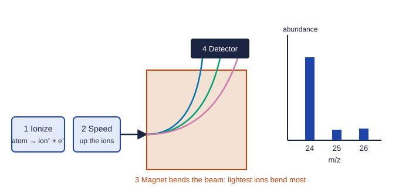

Mass Spectra of Elements
Atoms of one element share an atomic number (protons) but can differ in neutrons; these isotopes have different masses.
Part 1 · Hook
Why this matters
Part 2 · Before you start
What this builds on
Part 3 · Prerequisite check
Quick check before you start
1. One atom of an element has a mass of 24.31 amu on average. What is the mass of one mole of its atoms?
- 24.31 g
- 24.31 amu
- 24.31 × 6.022 × 10²³ g
- 24.31 kg
Show the answer
The number in amu per atom is the same number in g per mole.
- Correct: 24.31 g:
- 24.31 amu:
- 24.31 × 6.022 × 10²³ g:
- 24.31 kg:
2. What is 60% of 70?
- 42
- 0.42
- 4200
- 116.7
Show the answer
60% is the fraction 0.60, and 0.60 × 70 = 42.
- Correct: 42:
- 0.42:
- 4200:
- 116.7:
Part 4 · See it
See it first

Part 5 · Step by step
How it works, step by step
- Atoms of one element all have the same number of protons but can have different numbers of neutronsan element can exist as several isotopes with different masses
- A mass spectrometer makes singly charged ions and sorts them by masseach isotope gives its own peak at its mass
- The height of each peak is proportional to how many atoms of that isotope are presentthe peak heights give the relative abundances
- Natural samples are a mix of isotopesthe atomic mass on the periodic table is the abundance-weighted average of the isotope masses
Part 6 · Key ideas
Key ideas
- An atom has protons and neutrons in its nucleus and electrons around it. The atomic number (protons) identifies the element; the mass number = protons + neutrons.
- Isotopes: same element, different numbers of neutrons, so different masses. ³⁵Cl and ³⁷Cl.
- In a mass spectrum, each peak is one isotope (as a 1+ ion); its position is the mass and its height the relative abundance.
- Average atomic mass = Σ (fraction × isotope mass). It sits closest to the most abundant isotope.
Part 7 · Misconception
A common mistake
The wrong idea: The atomic mass on the periodic table is the mass of a typical atom of the element.
What actually happens: It is a weighted average over the isotopes, and often no atom has exactly that mass. No chlorine atom has a mass of 35.45 amu; chlorine is about 76% chlorine-35 and 24% chlorine-37.
Part 8 · Check yourself
Check yourself
Exam-style questions. Anything you miss goes into your review queue.
1. What do all atoms of one element have in common?
- The same number of neutrons
- The same mass number
- The same number of protons
- The same mass, to the nearest 0.001 amu
Show the answer
The atomic number (number of protons) identifies the element. Neutrons, and so mass, can vary.
- The same number of neutrons: Atoms of one element can differ in neutrons; those are isotopes.
- The same mass number: Isotopes of one element have different mass numbers.
- Correct: The same number of protons: Right: the number of protons, the atomic number, defines the element.
- The same mass, to the nearest 0.001 amu: Different isotopes have different masses.
Graph
Mass spectrum of a pure element
A sample of a pure element is turned into singly charged positive ions (each atom loses one electron) and passed through a mass spectrometer. The isotope masses are 23.985, 24.986 and 25.983 amu.
Data table
| Mass-to-charge ratio, m/z | Element sample |
|---|---|
| 24 | 78.99 |
| 25 | 10 |
| 26 | 11.01 |
2. How many isotopes of this element does the spectrum show?
- One, since the sample is a pure element
- Three
- Twenty-five, the middle mass
- Two, since the smaller peaks count as one
Show the answer
One peak per isotope: three peaks, three isotopes, with mass numbers 24, 25 and 26.
- One, since the sample is a pure element: A pure element can still be a mix of isotopes; each peak is one.
- Correct: Three: Right: each peak is ions of one isotope, and there are three peaks.
- Twenty-five, the middle mass: The m/z values are masses, not a count of isotopes.
- Two, since the smaller peaks count as one: The peaks at 25 and 26 have different masses, so they are different isotopes.
3. Calculate the average atomic mass of the element from the spectrum.
Type a number in amu.
Show the answer
(0.7899)(23.985) + (0.1000)(24.986) + (0.1101)(25.983) = 18.946 + 2.499 + 2.861 = 24.31 amu. Each mass is weighted by its fraction.
- Answer: 24.31 amu
4. Which element is this, and what evidence supports the claim?
- Sodium, because the tallest peak is near 23
- Chromium, because three isotopes add to a mass near 75
- Aluminum, because 24 + 25 + 26 is close to 27 times 3
- Magnesium, whose atomic mass on the periodic table is 24.31
Show the answer
The abundance-weighted average, 24.31 amu, is the atomic mass of magnesium. An element is identified by matching its average atomic mass (and, with more data, its atomic number).
- Sodium, because the tallest peak is near 23: The tallest peak is at 24, and sodium's average is 22.99, which does not match 24.31.
- Chromium, because three isotopes add to a mass near 75: Atomic mass is a weighted average of the isotopes, not their sum.
- Aluminum, because 24 + 25 + 26 is close to 27 times 3: A simple average of the mass numbers is 25, and aluminum's is 26.98: neither matches.
- Correct: Magnesium, whose atomic mass on the periodic table is 24.31: Right: the weighted average, 24.31 amu, matches magnesium.
5. Why is the average atomic mass much closer to 24 than to 25?
- About 79% of the atoms are the isotope of mass 24
- The isotope of mass 24 has the most protons
- Heavier isotopes are not counted in the average
- The spectrometer detects lighter ions more easily
Show the answer
A weighted average sits nearest the most abundant isotope. Here 78.99% of the atoms have mass about 24.
- Correct: About 79% of the atoms are the isotope of mass 24: Right: the most abundant isotope pulls the weighted average toward its mass.
- The isotope of mass 24 has the most protons: Isotopes of one element have the same number of protons.
- Heavier isotopes are not counted in the average: All isotopes count, each weighted by its abundance.
- The spectrometer detects lighter ions more easily: The peak heights reflect how many atoms of each isotope are present, not a detector bias.
Data table
Isotopes of three elements
The table lists isotope masses and natural abundances.
| Element | Isotope | Isotope mass (amu) | Abundance (%) |
|---|---|---|---|
| Chlorine | ³⁵Cl | 34.969 | 75.76 |
| Chlorine | ³⁷Cl | 36.966 | 24.24 |
| Gallium | ⁶⁹Ga | 68.926 | 60.11 |
| Gallium | ⁷¹Ga | 70.925 | 39.89 |
| Boron | ¹⁰B | 10.013 | not given |
| Boron | ¹¹B | 11.009 | not given |
6. A student says chlorine's mass spectrum would show one peak at 35.45, the atomic mass on the periodic table. Which response is correct?
- Yes, because the spectrometer reports the average mass of the atoms in the sample
- No; the spectrum shows peaks at 35 and 37 of equal height
- No; it shows one peak at 36, halfway between the isotopes
- No; it shows peaks near 35 and 37, the first about three times taller
Show the answer
The periodic-table value is a weighted average of real isotopes. The spectrum shows each isotope: a tall peak at 35 and one about a third as tall at 37.
- Yes, because the spectrometer reports the average mass of the atoms in the sample: A mass spectrometer separates the isotopes and shows each one as a peak.
- No; the spectrum shows peaks at 35 and 37 of equal height: The heights follow the abundances, 75.76% and 24.24%, about 3 to 1.
- No; it shows one peak at 36, halfway between the isotopes: No chlorine atom has mass 36 in this data; the peaks are at each isotope's mass.
- Correct: No; it shows peaks near 35 and 37, the first about three times taller: Right: 35.45 is an average. Each peak is a real isotope, and the heights follow 75.76% and 24.24%.
7. An atom of oxygen gains two electrons. What does it become?
- A cation with a 2+ charge
- An anion with a 2− charge
- An isotope of oxygen with a mass two units higher
- An atom of neon, which has two more electrons
Show the answer
O has 8 protons. With 10 electrons the charge is 8 − 10 = 2−: the oxide anion, O²⁻.
- A cation with a 2+ charge: Gaining electrons adds negative charge; a cation forms when electrons are lost.
- Correct: An anion with a 2− charge: Right: two extra electrons give two more negative charges than positive ones.
- An isotope of oxygen with a mass two units higher: Electrons barely change the mass, and isotopes differ in neutrons, not electrons.
- An atom of neon, which has two more electrons: The element depends on protons; oxygen keeps its 8 protons.
Part 9 · Summary
Summary
Part 10 · Up next
What comes next
Part 11 · Connections